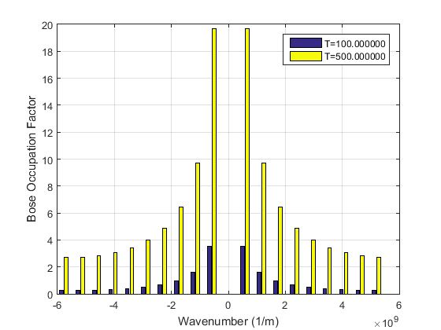

Bose Occupation Factor plot
% We are going to compute the Bose Occupation Factor. That is, the average number of % phonons at a fixed frequency (or wavenumber) and tempetarute. % We will be using silicon atoms for our chain (we take the distance between % the nearest neighbour atoms in a silicon crystal as our lattice parameter a) m=28*1.660538921*10^(-27);%mass of an atom (kg) K=5;%Hook's constant (kg/s^2) a=5.43*10^-10;%distance between atoms (m) Kb=1.38064852*10^(-23);%Boltzmann constant hbar=1.054571800*10^(-34);%Dirac constant N=20;%Number of atoms in the chain T1=100; B=1/(Kb*T1); % Computing the possible values of the wavenumber, depending on the % parity of N: ii=mod(N,2); %0 if the number of atoms is even, 1 if it is odd if ii == 1 n=[-N/2+1/2:N/2-1/2]; else n=[-N/2:N/2-1]; end % By this we ensure that n is a vector of N equally spaced integers in % order to impose periodicity,and each k is between -pi/a and pi/a (so that we work in the 1st Brillouin Zone) k=(2*pi*n)/(N*a); %Computing frequency for each wavenumber (we plug k in the dispersion relation) w=2*sqrt(K/m)*abs(sin(k*a/2)); %Computing the Bose Occupation Factor for each frequency (or for each %wavenumber) nb1 = 1./(exp(B*hbar*w)-1) %Notice that for w=0 it results to be infinite, then, it will not appear in %the representation %Representing the Bose Occupation Factor in function of wavenumber in a bar %diagram bar(k,nb1);grid on xlabel('Wavelength (m)') ylabel('Bose Occupation Factor') % If we want to compare the Bose Occupation Factor of equal wavenumbers but different temperature: T2=500; B=1/(Kb*T2); nb2 = 1./(exp(B*hbar*w)-1); y=[nb1' nb2']; bar(k,y,'group');grid on xlabel('Wavenumber (1/m)') ylabel('Bose Occupation Factor') legend(sprintf('T=%f',T1),sprintf('T=%f',T2))
nb1 =
Columns 1 through 7
0.2580 0.2645 0.2848 0.3224 0.3842 0.4842 0.6504
Columns 8 through 14
0.9499 1.5834 3.5558 Inf 3.5558 1.5834 0.9499
Columns 15 through 20
0.6504 0.4842 0.3842 0.3224 0.2848 0.2645
